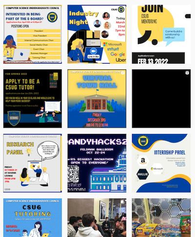
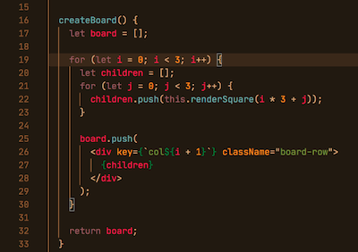
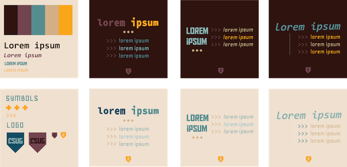
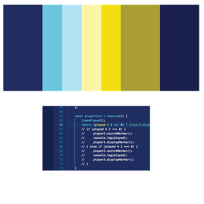
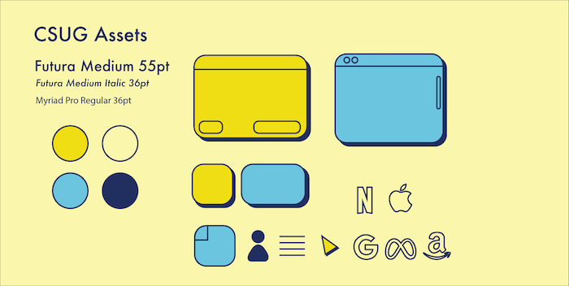
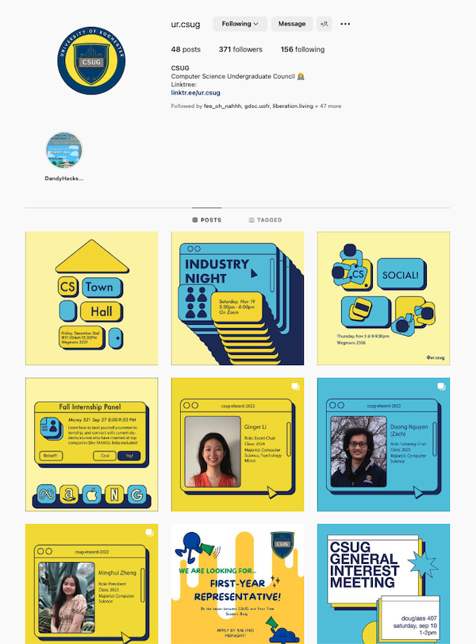

The Computer Science Undergraduate Council (CSUG) is a student organization that aims to build a community for computer science majors and those interested in the field. CSUG helps bring students together and offers resources such as career
information and tutoring.
Goals
To create marketing material to attract students to join CSUG.
Audience
Students that have recently changed to Computer Science or underclassmen that have entered as Computer Science Majors.
Roles & Responsibilities
As the Social Media Chair, I am responsible for designing promotional material and creating posters for events, as well as managing our social media accounts.
Looking for Improvement

Past Instagram Posts
To begin, I analyzed past Instagram posts to identify ways to improve CSUG's online presence. I noticed that there was a clear color scheme based on the organization's logo and that the feed had a vibrant, slightly disorienting appearance. With this in
mind, I sought to find ways to enhance the visual appeal and clarity of our social media content.
Brand Design v1

Kimbie Dark Theme VSCode
In order to create a sense of belonging and make our social media content accessible to new members, I sought to draw inspiration from elements of computer science that would be familiar to anyone interested in the field. I looked to common themes in
integrated development environments (IDEs) that would be visually appealing. As a starting point, I experimented with using a color palette and text format similar to the Kimbie Dark Theme in Visual Studio Code.

Design File v1
However, after comparing this new design to past posts, there was visually no connection to our previous content, which I concluded would only make our feed more disorienting. I searched for other design options.
Brand Design v2

Palette Inspiration
After looking through other IDE themes for inspiration, along with references to our current logo, I settled on this bright, cool toned palette, with an emphasis on a sunny, light, lemon color. I thought it would give our brand a new, refreshed feel without
seeming too distant from our past designs.

Design File v2
I gathered design elements to use consistently in a design template. This included selecting modern, sans serif fonts that would give off an approachable but professional vibe. I also created computer science-themed elements such as web pages to add visual
interest to our posters and other promotional materials.
Outcomes and Results

Instagram Feed
The above image shows what our current Instagram feed looks like. You can see the use of the colorful palette and visual elements to complement event information.